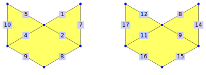

This chapter is concerned with morphisms between different polygonal complexes (morphisms between twisted polygonal complexes are not implemented so far).
A morphism between two polygonal complexes \((V_1,E_1,F_1)\) and \((V_2,E_2,F_2)\) consists of maps \(V_1 \to V_2\), \(E_1 \to E_2\), and \(F_1 \to F_2\), such that
incident elements remain incident
the two vertices of an edge are mapped to two different vertices
different vertices/edges of a face are mapped to different vertices/edges (for example, a face with six edges cannot be mapped to a face with three edges)
Since polygonal morphisms are stored as mappings (in the GAP-sense), all methods available for mappings (in particular those from section Reference: Properties and Attributes of (General) Mappings) are available for polygonal morphisms. In particular, IsInjective, IsSurjective, IsBijective.
If the edges and faces of the polygonal complexes are uniquely defined by their vertices (which can be tested by IsAnomalyFree, compare 16.1-1), the polygonal morphism can be defined by the vertex map (the more flexible constructor in 7.1-1 requires all three maps). Consider the following example, in which the face 2 is mapped to the face 2, and both the faces 3 and 4 are mapped to the face 3:
gap> source := PolygonalSurfaceByDownwardIncidence( > [[1,2],[2,3],[3,4],,[1,6],,[2,7],[3,7],[4,7],,,[6,7]], > [,[1,7,12,5],[2,7,8],[3,8,9]]);; gap> range := PolygonalSurfaceByDownwardIncidence( > [[1,2],[2,3],,[1,5],[2,5],,[3,6],[3,7],,,[5,6],[6,7]], > [[1,4,5],[2,5,11,7],[7,8,12]]);;
gap> polMor := PolygonalMorphismByVertexImages(source,range, [5,6,7,6,,2,3]); <polygonal morphism>
The most important aspect of a morphism is determining images and preimages of vertices, edges, and faces.
gap> ImageOfEdge(polMor, 12); 2 gap> ImageOfFace(polMor, 4); 3 gap> PreImagesOfEdge(polMor, 12); [ 2, 3 ] gap> PreImagesOfFace(polMor, 1); [ ]
In this section, we give several different ways to construct morphisms from scratch.
‣ PolygonalMorphismByLists( sourceComplex, rangeComplex, vertexMap, edgeMap, faceMap ) | ( operation ) |
‣ PolygonalMorphismByListsNC( sourceComplex, rangeComplex, vertexMap, edgeMap, faceMap ) | ( operation ) |
Returns: a polygonal mapping
Construct a polygonal morphism by three lists. The necessary arguments are
sourceComplex: The polygonal complex that become the source of the polygonal morphism.
rangeComplex: The polygonal complex that becomes the range of the polygonal morphism.
vertexMap: A list, such that for each vertex v in sourceComplex, the element vertexMap[v] is a vertex in rangeComplex, representing the image under the polygonal morphism.
edgeMap: A list, such that for each edge e in sourceComplex, the element edgeMap[v] is an edge in rangeComplex, representing the image under the polygonal morphism.
faceMap: A list, such that for each face f in sourceComplex, the element faceMap[v] is a face in rangeComplex, representing the image under the polygonal morphism.
As an illustration we define a polygonal morphisms from a 6-umbrella to a 3--umbrella.
gap> six := SimplicialSurfaceByDownwardIncidence( > [[1,2],[2,3],[3,4],[4,5],[5,6],[6,1],,[1,8],[2,8],[3,8],[4,8],[5,8],[6,8]], > [[1,8,9],[2,9,10],[3,10,11],[4,11,12],[5,12,13],[6,13,8]]);; gap> three := SimplicialSurfaceByDownwardIncidence( > [[1,2],[2,3],[3,1],,[1,5],[2,5],[3,5]], [[1,5,6],[2,6,7],[3,7,5]]);; gap> vertexMap := [1,2,3,1,2,3,,5]; [ 1, 2, 3, 1, 2, 3,, 5 ] gap> edgeMap := [1,2,3,1,2,3,,5,6,7,5,6,7]; [ 1, 2, 3, 1, 2, 3,, 5, 6, 7, 5, 6, 7 ] gap> faceMap := [1,2,3,1,2,3]; [ 1, 2, 3, 1, 2, 3 ] gap> polMor := PolygonalMorphismByLists(six, three, > vertexMap, edgeMap, faceMap);; gap> SourceComplex(polMor) = six; true gap> RangeComplex(polMor) = three; true gap> VertexMapAsImageList(polMor) = vertexMap; true gap> EdgeMapAsImageList(polMor) = edgeMap; true gap> FaceMapAsImageList(polMor) = faceMap; true
The NC-version does not check whether:
The individual argument lists map every vertex/edge/face of sourceComplex to a vertex/edge/face of rangeComplex.
The incidence structure is preserved by the mapping.
The vertices incident to an edge are mappped to different vertices.
A polygon is mapped to a polygon with the same number of sides.
The edges incident to a face are mapped to different edges.
The vertices incident to a face are mapped to different vertices.
‣ PolygonalMorphismByVertexImages( sourceComplex, rangeComplex, vertexMap ) | ( operation ) |
‣ PolygonalMorphismByVertexImagesNC( sourceComplex, rangeComplex, vertexMap ) | ( operation ) |
Returns: a polygonal mapping
Given two vertex-faithful (16.1-1) polygonal complexes and a map between their vertices, construct a polygonal morphism extending the vertex map. The arguments are:
sourceComplex: The vertex-faithful polygonal complex that become the source of the polygonal morphism.
rangeComplex: The vertex-faithful polygonal complex that becomes the range of the polygonal morphism.
vertexMap: A list, such that for each vertex v in sourceComplex, the element vertexMap[v] is a vertex in rangeComplex, representing the image under the polygonal morphism.
As an illustration we define a polygonal morphisms from a 6-umbrella to a 3--umbrella.
gap> six := SimplicialSurfaceByDownwardIncidence( > [[1,2],[2,3],[3,4],[4,5],[5,6],[6,1],,[1,8],[2,8],[3,8],[4,8],[5,8],[6,8]], > [[1,8,9],[2,9,10],[3,10,11],[4,11,12],[5,12,13],[6,13,8]]);; gap> three := SimplicialSurfaceByDownwardIncidence( > [[1,2],[2,3],[3,1],,[1,5],[2,5],[3,5]], [[1,5,6],[2,6,7],[3,7,5]]);; gap> vertexMap := [1,2,3,1,2,3,,5]; [ 1, 2, 3, 1, 2, 3,, 5 ] gap> polMor := PolygonalMorphismByVertexImages(six, three, vertexMap);; gap> SourceComplex(polMor) = six; true gap> RangeComplex(polMor) = three; true gap> VertexMapAsImageList(polMor) = vertexMap; true gap> EdgeMapAsImageList(polMor); [ 1, 2, 3, 1, 2, 3,, 5, 6, 7, 5, 6, 7 ] gap> FaceMapAsImageList(polMor); [ 1, 2, 3, 1, 2, 3 ]
The NC-version does not check whether:
The list vertexMap maps every vertex of sourceComplex to a vertex of rangeComplex.
The incidence structure is preserved by the mapping.
The vertices incident to an edge are mappped to different vertices.
A polygon is mapped to a polygon with the same number of sides.
The vertices incident to a face are mapped to different vertices.
‣ PolygonalIdentityMorphism( complex ) | ( operation ) |
Returns: a polygonal mapping
Given a polygonal complex, return the polygonal morphism that sends this complex to itself (the identity morphism).
As an example, consider the tetrahedron:
gap> tetra := Tetrahedron();; gap> id := PolygonalIdentityMorphism(tetra);; gap> SourceComplex(id) = tetra; true gap> RangeComplex(id) = tetra; true gap> VertexMapAsImageList(id); [ 1, 2, 3, 4 ] gap> EdgeMapAsImageList(id); [ 1, 2, 3, 4, 5, 6 ] gap> FaceMapAsImageList(id); [ 1, 2, 3, 4 ]
‣ CompositionMapping( mapLast, mapSecondToLast, ... ) | ( operation ) |
‣ CompositionMapping2( map2, map1 ) | ( operation ) |
Returns: A polygonal morphism
Compose several polygonal morphisms. The method CompositionMapping2 returns the polygonal morphisms that is obtained by first applying map1 and then applying map2.
The method CompositionMapping can compose an arbitrary number of polygonal morphisms. Note that the first argument is the last map used in the composition. In addition, it also respects IsInjective and IsSurjective, if applicable.
If the range of the \(i\)-th map is not equal to the source of the \((i+1)\)th map, an error is raised.
We use a map from a six-umbrella to a three-umbrella as illustration.
gap> six := SimplicialSurfaceByDownwardIncidence( > [[1,2],[2,3],[3,4],[4,5],[5,6],[6,1],,[1,8],[2,8],[3,8],[4,8],[5,8],[6,8]], > [[1,8,9],[2,9,10],[3,10,11],[4,11,12],[5,12,13],[6,13,8]]);; gap> three := SimplicialSurfaceByDownwardIncidence( > [[1,2],[2,3],[3,1],,[1,5],[2,5],[3,5]], [[1,5,6],[2,6,7],[3,7,5]]);; gap> mor_6_to_6 := PolygonalIdentityMorphism(six);; gap> mor_3_to_3 := PolygonalMorphismByLists(three, three, > [2,3,1,,5], [2,3,1,,6,7,5], [2,3,1]);; gap> mor_6_to_3 := PolygonalMorphismByLists(six, three, > [1,2,3,1,2,3,,5], [1,2,3,1,2,3,,5,6,7,5,6,7], [1,2,3,1,2,3]);; gap> comp := CompositionMapping2(mor_3_to_3, mor_6_to_3);; gap> VertexMapAsImageList(comp); [ 2, 3, 1, 2, 3, 1,, 5 ] gap> EdgeMapAsImageList(comp); [ 2, 3, 1, 2, 3, 1,, 6, 7, 5, 6, 7, 5 ] gap> FaceMapAsImageList(comp); [ 2, 3, 1, 2, 3, 1 ] gap> CompositionMapping2(mor_6_to_3, mor_6_to_6) = mor_6_to_3; true gap> CompositionMapping(mor_3_to_3, mor_6_to_3, mor_6_to_6) = comp; true
‣ InversePolygonalMorphism( isoMor ) | ( attribute ) |
‣ Inverse( autoMor ) | ( operation ) |
‣ InverseGeneralMapping( isoMor ) | ( attribute ) |
Returns: A polygonal morphism
Given a bijective polygonal morphism, one can define its inverse, i.e. a polygonal morphism, in which SourceComplex (7.4-1) and RangeComplex (7.4-2) are switched.
Due to the way in which GAP handles inverses and mappings (compare the introduction of section Reference: Arithmetic Operations for General Mappings), the different methods perform subtly different tasks:
InversePolygonalMorphism(isoMor) constructs the expected inverse map, from RangeComplex(isoMor) to SourceComplex(isoMor).
Inverse(autoMor) only constructs this inverse, if SourceComplex(autoMor) and RangeComplex(autoMor) coincide.
InverseGeneralMapping does the same as InversePolygonalMorphism, but might be subject to future change, if inverses are defined for non-bijective morphisms in the future.
All of the methods throw errors if their requirements are not met.
To illustrate, we use a relabelling of a five-umbrella.
gap> left := SimplicialSurfaceByDownwardIncidence( > [[1,2],[1,3],[1,4],[1,5],[1,6],[2,3],[3,4],[4,5],[5,6],[6,2]], > [[1,2,6],[2,3,7],[3,4,8],[4,5,9],[1,5,10]]);; gap> right := SimplicialSurfaceByDownwardIncidence( > [,[1,3],[1,4],[1,5],[1,6],[1,7],,[3,4],[4,5],[5,6],[6,7],[3,7]], > [,,[2,3,8],[3,4,9],[4,5,10],[5,6,11],[2,6,12]]);; gap> morph := PolygonalMorphismByLists(left, right, > [1,3,4,5,6,7], [2,3,4,5,6,8,9,10,11,12], [3,4,5,6,7]);; gap> inv := InversePolygonalMorphism(morph);; gap> SourceComplex(inv) = right; true gap> RangeComplex(inv) = left; true gap> VertexMapAsImageList(inv); [ 1,, 2, 3, 4, 5, 6 ] gap> EdgeMapAsImageList(inv); [ , 1, 2, 3, 4, 5,, 6, 7, 8, 9, 10 ] gap> FaceMapAsImageList(inv); [,, 1, 2, 3, 4, 5 ]
‣ ButterflyFaithfulMonomorphismIntoSimplicialSurface( surf1, surf2 ) | ( operation ) |
Returns: A polygonal morphism or fail
Given two simplicial surfaces surf1 and surf2, return a butterfly-faithful monomorphism from surf1 to surf2 if it exists. Otherwise return fail. A homomorphism of simplicial surfaces is called butterfly-faithful if the homomorphism when restricted to a butterfly, i.e. restricted to two incident faces of an inner edge, becomes a bijection onto another butterfly. In other words, every butterfly of surf1 is being preserved and does not degenerate in surf2. As an example, consider the 3-half-umbrella and 6-umbrella.
gap> six := SimplicialSurfaceByDownwardIncidence( > [[1,2],[2,3],[3,4],[4,5],[5,6],[6,1],,[1,8],[2,8],[3,8],[4,8],[5,8],[6,8]], > [[1,8,9],[2,9,10],[3,10,11],[4,11,12],[5,12,13],[6,13,8]]);; gap> three := SimplicialSurfaceByDownwardIncidence( > [[1,2],[2,3],[3,4],[5,4],[1,5],[2,5],[3,5]], [[1,5,6],[2,6,7],[3,7,4]]);; gap> mor_3_to_6 := ButterflyFaithfulMonomorphismIntoSimplicialSurface(three, > six);; gap> VertexMapAsImageList(mor_3_to_6); [ 1, 2, 3, 4, 8 ] gap> EdgeMapAsImageList(mor_3_to_6); [ 1, 2, 3, 11, 8, 9, 10 ] gap> FaceMapAsImageList(mor_3_to_6); [ 1, 2, 3 ]
‣ AllButterflyFaithfulMonomorphismsIntoSimplicialSurface( surf1, surf2 ) | ( operation ) |
Returns: A list of polygonal morphisms
Given two simplicial surfaces surf1 and surf2, return a list of all butterfly-faithful monomorphisms from surf1 to surf2. A homomorphism of simplicial surfaces is called butterfly-faithful if the homomorphism when restricted to a butterfly, i.e. restricted to two incident faces of an inner edge, becomes a bijection onto another butterfly. In other words, every butterfly of surf1 is being preserved and does not degenerate in surf2. As an example, consider the 3-half-umbrella and 6-umbrella. We would expect 12 butterfly-faithful monomorphisms, namely by aligning the 3-half umbrella with 3 consecutive faces of the 6-umbrella. There are 6 ways to do this and another 6 if we flip the 3-half-umbrella first.
gap> six := SimplicialSurfaceByDownwardIncidence( > [[1,2],[2,3],[3,4],[4,5],[5,6],[6,1],,[1,8],[2,8],[3,8],[4,8],[5,8],[6,8]], > [[1,8,9],[2,9,10],[3,10,11],[4,11,12],[5,12,13],[6,13,8]]);; gap> three := SimplicialSurfaceByDownwardIncidence( > [[1,2],[2,3],[3,4],[5,4],[1,5],[2,5],[3,5]], [[1,5,6],[2,6,7],[3,7,4]]);; gap> all_mor_3_to_6 := AllButterflyFaithfulMonomorphismsIntoSimplicialSurface( > three, six);; gap> Length(all_mor_3_to_6); 12
This section contains the functionality to compute images and preimages. Since polygonal morphisms connect two polygonal complexes, it is often necessary to make this connection explicit. For that reason, methods to compute images and preimages are provided.
Currently, the following methods are implemented:
We illustrate these methods on the following polygonal morphism.
gap> source := PolygonalComplexByDownwardIncidence( > [[1,2],, [2,4],, [4,5], [5,6],, [6,8],, [8,10],, > [10,12],, [1,12], [2,12], [4,10], [4,6]], > [[1,14,15], [3,16,12,15],, [16,17,8,10], [5,6,17]]);; gap> range := PolygonalComplexByDownwardIncidence( > [[1,2], [2,3], [3,4], [4,5], [5,6],, [6,8],, [8,1], [2,8], [2,4], [4,6]], > [[1,10,9], [2,3,11],, [11,12,7,10], [4,5,12]]);; gap> polMor := PolygonalMorphismByLists( source, range, > [ 1, 2,, 4, 3, 2,, 8,, 6,, 8 ], > [ 1,, 11,, 3, 2,, 10,, 7,, 7,, 9, 10, 12, 11 ], [ 1, 4,, 4, 2 ]);;
‣ ImageOfVertex( polMor, v ) | ( operation ) |
‣ ImageOfVertexNC( polMor, v ) | ( operation ) |
Returns: a positive integer
Given a polygonal morphism polMor and a vertex v, return the image of v under polMor. If the given v is not a vertex of the source complex (compare 7.4-1) of polMor, an error is raised. The NC-version does not check whether v is a vertex of the source complex.
Consider the polygonal morphism from the start of section 7.2 as illustration.
gap> ImageOfVertex(polMor, 1); 1 gap> ImageOfVertex(polMor, 5); 3 gap> ImageOfVertex(polMor, 6); 2
‣ ImageOfEdge( polMor, e ) | ( operation ) |
‣ ImageOfEdgeNC( polMor, e ) | ( operation ) |
Returns: a positive integer
Given a polygonal morphism polMor and an edge e, return the image of e under polMor. If the given e is not an edge of the source complex (compare 7.4-1) of polMor, an error is raised. The NC-version does not check whether e is an edge of the source complex.
Consider the polygonal morphism from the start of section 7.2 as illustration.
gap> ImageOfEdge(polMor, 1); 1 gap> ImageOfEdge(polMor, 5); 3 gap> ImageOfEdge(polMor, 8); 10
‣ ImageOfFace( polMor, f ) | ( operation ) |
‣ ImageOfFaceNC( polMor, f ) | ( operation ) |
Returns: a positive integer
Given a polygonal morphism polMor and a face f, return the image of f under polMor. If the given f is not a face of the source complex (compare 7.4-1) of polMor, an error is raised. The NC-version does not check whether f is a face of the source complex.
Consider the polygonal morphism from the start of section 7.2 as illustration.
gap> ImageOfFace(polMor, 1); 1 gap> ImageOfFace(polMor, 5); 2 gap> ImageOfFace(polMor, 4); 4
‣ PreImagesOfVertex( polMor, v ) | ( operation ) |
‣ PreImagesOfVertexNC( polMor, v ) | ( operation ) |
Returns: a set of positive integers
Given a polygonal morphism polMor and a vertex v of the range complex (compare 7.4-2), return the set of all preimages of v under polMor. If the given vertex v is not a vertex of the range complexi, an error is raised.
The NC-version does not check whether v is a vertex of the range complex.
Consider the polygonal morphism from the start of section 7.2 as illustration.
gap> PreImagesOfVertex(polMor, 1); [ 1 ] gap> PreImagesOfVertex(polMor, 2); [ 2, 6 ] gap> PreImagesOfVertex(polMor, 5); [ ]
‣ PreImagesOfEdge( polMor, e ) | ( operation ) |
‣ PreImagesOfEdgeNC( polMor, e ) | ( operation ) |
Returns: a set of positive integers
Given a polygonal morphism polMor and an edge e of the range complex (compare 7.4-2), return the set of all preimages of e under polMor. If the given edge e is not an edge of the range complexi, an error is raised.
The NC-version does not check whether e is an edge of the range complex.
Consider the polygonal morphism from the start of section 7.2 as illustration.
gap> PreImagesOfEdge(polMor, 2); [ 6 ] gap> PreImagesOfEdge(polMor, 11); [ 3, 17 ] gap> PreImagesOfEdge(polMor, 4); [ ]
‣ PreImagesOfFace( polMor, f ) | ( operation ) |
‣ PreImagesOfFaceNC( polMor, f ) | ( operation ) |
Returns: a set of positive integers
Given a polygonal morphism polMor and a face f of the range complex (compare 7.4-2), return the set of all preimages of f under polMor. If the given face f is not a face of the range complexi, an error is raised.
The NC-version does not check whether f is a face of the range complex.
Consider the polygonal morphism from the start of section 7.2 as illustration.
gap> PreImagesOfFace(polMor, 2); [ 5 ] gap> PreImagesOfFace(polMor, 4); [ 2, 4 ] gap> PreImagesOfFace(polMor, 5); [ ]
We have defined polygonal complexes in a way such that the labels for vertices, edges, and faces do not have to be distinct. While this is more convenient for the casual user, it is sometimes practical to enforce distinct labels. Notably, these cases include morphisms and automorphism groups.
The distinct label set is called VEFLabels. Consider the following polygonal surface:
gap> cat := PolygonalSurfaceByUpwardIncidence( > [[1,2,4,5],, [1,7], [2,7,8], [8,9], [4,9,10], [5,10]], > [[1], [1,2],, [2,4], [4],, [1], [2], [2], [4]]);; gap> Vertices(cat); [ 1, 3, 4, 5, 6, 7 ] gap> Edges(cat); [ 1, 2, 4, 5, 7, 8, 9, 10 ] gap> Faces(cat); [ 1, 2, 4 ] gap> Intersection( Vertices(cat), Edges(cat) ); [ 1, 4, 5, 7 ]
Using the VEF-labels shifts the labels of edges and faces upwards to avoid intersections.
gap> VEFLabels(cat); [ 1, 3, 4, 5, 6, 7, 8, 9, 11, 12, 14, 15, 16, 17, 18, 19, 21 ] gap> VEFLabelsOfVertices(cat); [ 1,, 3, 4, 5, 6, 7 ] gap> VEFLabelsOfEdges(cat); [ 8, 9,, 11, 12,, 14, 15, 16, 17 ] gap> VEFLabelsOfFaces(cat); [ 18, 19,, 21 ]
‣ VEFLabels( complex ) | ( attribute ) |
Returns: a set of positive integers
Return the set of VEF-labels for the given polygonal complex. The VEF-labels are a set of labels that distinguish vertices, edges, and faces. It is constructed as follows:
The vertex labels stay the same
The edge labels are shifted upwards by the maximal vertex label
The face labels are shifted upwards by the sum of maximal vertex label and maximal edge label
For example, consider the polygonal surface from the start of section 7.3:

gap> Vertices(cat); [ 1, 3, 4, 5, 6, 7 ] gap> Edges(cat); [ 1, 2, 4, 5, 7, 8, 9, 10 ] gap> Faces(cat); [ 1, 2, 4 ] gap> VEFLabels(cat); [ 1, 3, 4, 5, 6, 7, 8, 9, 11, 12, 14, 15, 16, 17, 18, 19, 21 ]
‣ VEFLabelsOfVertices( complex ) | ( attribute ) |
‣ VEFLabelOfVertex( complex, vertex ) | ( operation ) |
‣ VEFLabelOfVertexNC( complex, vertex ) | ( operation ) |
Returns: a list of positive integers / a positive integer
The method VEFLabelOfVertex(complex, vertex) returns the VEF-label of vertex. The NC-version does not check whether the given vertex is a vertex of complex.
The attribute VEFLabelsOfVertices(complex) collects all of those labels in a list that is indexed by the vertex labels, i.e. VEFLabelsOfOfVertices(complex)[vertex] = VEFLabelOfVertex(complex, vertex). All other positions of this list are not bound.
For example, consider the polygonal surface from the start of section 7.3:
gap> VEFLabelOfVertex(cat, 3); 3 gap> VEFLabelOfVertex(cat, 6); 6 gap> VEFLabelsOfVertices(cat); [ 1,, 3, 4, 5, 6, 7 ]
‣ VEFLabelsOfEdges( complex ) | ( attribute ) |
‣ VEFLabelOfEdge( complex, vertex ) | ( operation ) |
‣ VEFLabelOfEdgeNC( complex, vertex ) | ( operation ) |
Returns: a list of positive integers / a positive integer
The method VEFLabelOfEdge(complex, edge) returns the VEF-label of edge. The NC-version does not check whether the given edge is an edge of complex.
The attribute VEFLabelsOfEdges(complex) collects all of those labels in a list that is indexed by the edge labels, i.e. VEFLabelsOfOfEdges(complex)[edge] = VEFLabelOfEdge(complex, edge). All other positions of this list are not bound.
For example, consider the polygonal surface from the start of section 7.3:
gap> VEFLabelOfEdge(cat, 2); 9 gap> VEFLabelOfEdge(cat, 10); 17 gap> VEFLabelsOfEdges(cat); [ 8, 9,, 11, 12,, 14, 15, 16, 17 ]
‣ VEFLabelsOfFaces( complex ) | ( attribute ) |
‣ VEFLabelOfFace( complex, vertex ) | ( operation ) |
‣ VEFLabelOfFaceNC( complex, vertex ) | ( operation ) |
Returns: a list of positive integers / a positive integer
The method VEFLabelOfFace(complex, face) returns the VEF-label of face. The NC-version does not check whether the given face is a face of complex.
The attribute VEFLabelsOfFaces(complex) collects all of those labels in a list that is indexed by the face labels, i.e. VEFLabelsOfOfFaces(complex)[face] = VEFLabelOfFace(complex, face). All other positions of this list are not bound.
For example, consider the polygonal surface from the start of section 7.3:
gap> VEFLabelOfFace(cat, 2); 19 gap> VEFLabelOfFace(cat, 4); 21 gap> VEFLabelsOfFaces(cat); [ 18, 19,, 21 ]
‣ VertexOfVEFLabel( complex, label ) | ( operation ) |
‣ VertexOfVEFLabelNC( complex, label ) | ( operation ) |
Returns: a positive integer or fail
Given a polygonal complex complex and a VEF-label label, the method VertexOfVEFLabel(complex, label) returns the vertex associated to label.
For example, consider the polygonal surface from the start of section 7.3:
gap> VertexOfVEFLabel(cat, 1); 1 gap> VertexOfVEFLabel(cat, 2); fail gap> VertexOfVEFLabel(cat, 7); 7 gap> VertexOfVEFLabel(cat, 8); fail
The NC-version does not check whether the given label is valid. The normal version checks this and returns fail if label is not valid.
‣ EdgeOfVEFLabel( complex, label ) | ( operation ) |
‣ EdgeOfVEFLabelNC( complex, label ) | ( operation ) |
Returns: a positive integer or fail
Given a polygonal complex complex and a VEF-label label, the method EdgeOfVEFLabel(complex, label) returns the edge associated to label.
For example, consider the polygonal surface from the start of section 7.3:
gap> EdgeOfVEFLabel(cat, 7); fail gap> EdgeOfVEFLabel(cat, 9); 2 gap> EdgeOfVEFLabel(cat, 10); fail gap> EdgeOfVEFLabel(cat, 16); 9 gap> EdgeOfVEFLabel(cat, 18); fail
The NC-version does not check whether the given label is valid. The normal version checks this and returns fail if label is not valid.
‣ FaceOfVEFLabel( complex, label ) | ( operation ) |
‣ FaceOfVEFLabelNC( complex, label ) | ( operation ) |
Returns: a positive integer of fail
Given a polygonal complex complex and a VEF-label label, the method FaceOfVEFLabel(complex, label) returns the face associated to label.
For example, consider the polygonal surface from the start of section 7.3:
gap> FaceOfVEFLabel(cat, 17); fail gap> FaceOfVEFLabel(cat, 18); 1 gap> FaceOfVEFLabel(cat, 20); fail gap> FaceOfVEFLabel(cat, 21); 4 gap> FaceOfVEFLabel(cat, 22); fail
The NC-version does not check whether the given label is valid. The normal version checks this and returns fail if label is not valid.
This section contains the ingredients within a polygonal morphism, i.e. source and range complex, as well as the maps on vertices, edges, and faces.
We will illustrate them on the following polygonal morphism (on the sides are the VEF-labels):
gap> source := PolygonalSurfaceByDownwardIncidence( > [[1,2],[2,3],[3,4],,[1,6],,[2,7],[3,7],[4,7],,,[6,7]], > [,[1,7,12,5],[2,7,8],[3,8,9]]);; gap> range := PolygonalSurfaceByDownwardIncidence( > [[1,2],[2,3],,[1,5],[2,5],,[3,6],[3,7],,,[5,6],[6,7]], > [[1,4,5],[2,5,11,7],[7,8,12]]);; gap> polMor := PolygonalMorphismByLists(source,range, > [5,6,7,6,,2,3], [11,12,12,,5,,7,8,7,,,2], [,2,3,3]);;
‣ SourceComplex( polMap ) | ( attribute ) |
‣ SourceSurface( polMap ) | ( attribute ) |
Returns: a polygonal complex
Return the polygonal complex (or surface) that is the source of the general polygonal mapping polMap.
If the source is not a polygonal surface, then SourceSurface will return fail.
‣ RangeComplex( polMap ) | ( attribute ) |
‣ RangeSurface( polMap ) | ( attribute ) |
Returns: a polygonal complex
Return the polygonal complex (or surface) that is the range of the general polygonal mapping polMap.
If the range is not a polygonal surface, then RangeSurface will return fail.
‣ VertexMapAsImageList( polMor ) | ( attribute ) |
Returns: a list
Given a polygonal morphism polMor, return the restriction of the mapping to the vertices. The result is a list vMap, such that vMap[v] is the image of the vertex v under the polygonal morphism polMor. All other list entries are not bound.
We illustrate this on the polygonal morphism from the start of section 7.4:
gap> VertexMapAsImageList(polMor); [ 5, 6, 7, 6,, 2, 3 ]
‣ EdgeMapAsImageList( polMor ) | ( attribute ) |
Returns: a list
Given a polygonal morphism polMor, return the restriction of the mapping to the edges. The result is a list eMap, such that eMap[e] is the image of the edge e under the polygonal morphism polMor. All other list entries are not bound.
We illustrate this on the polygonal morphism from the start of section 7.4:
gap> EdgeMapAsImageList(polMor); [ 11, 12, 12,, 5,, 7, 8, 7,,, 2 ]
‣ FaceMapAsImageList( polMor ) | ( attribute ) |
Returns: a list
Given a polygonal morphism polMor, return the restriction of the mapping to the faces. The result is a list fMap, such that fMap[f] is the image of the face f under the polygonal morphism polMor. All other list entries are not bound.
We illustrate this on the polygonal morphism from the start of section 7.4:
gap> FaceMapAsImageList(polMor); [ , 2, 3, 3 ]
‣ VEFLabelMapAsImageList( polMor ) | ( attribute ) |
Returns: a list
A polygonal morphism polMor can be described by a map between the VEF-labels of source and target complex. This method returns this map as an image list, i.e. it returns a list vefMap, such that vefMap[x] is the image of the VEF-label x. All other list entries are not bound.
We illustrate this on the polygonal morphism from the start of section 7.4 (the VEF-labels are drawn on the sides).
gap> VEFLabelMapAsImageList(polMor); [ 5, 6, 7, 6,, 2, 3, 18, 19, 19,, 12,, 14, 15, 14,,, 9,, 21, 22, 22 ]
generated by GAPDoc2HTML